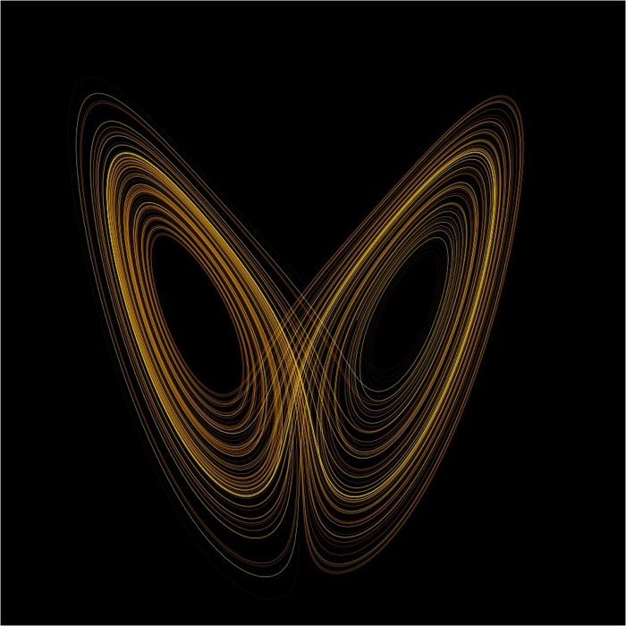
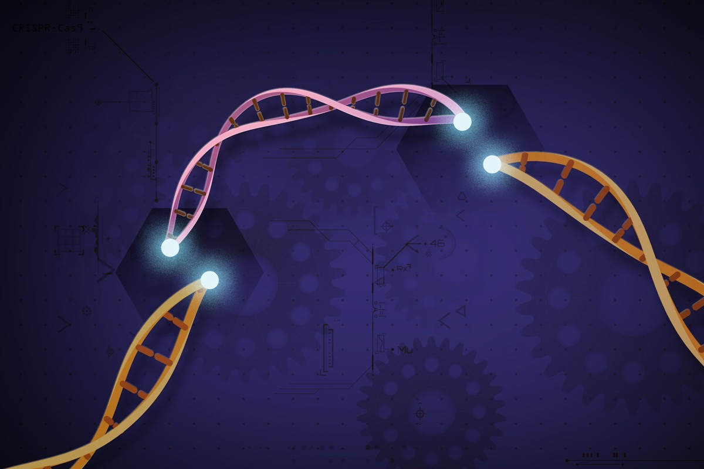

Executive Summary
Can you tell whether nudging one variable would change another—without ever knocking out a gene or running an A/B test, just by staring at time series you already have? The question sounds self-contradicting, yet IC², published in 2026 in J. R. Soc. Interface, answers it with two causal scores. One measures how entangled two variables are in their ordinary observed motion (CIC); the other measures whether, when you give one of them a tiny shove, that shove actually carries over to the other (iCIC). This piece walks through what those two scores are, and why you have to read them side by side to filter out hidden causes.
The heart of it isn't a mechanism but a contrast. Under genuine direct causation both scores run high; but when two variables only move together because of an unseen common cause, CIC stays high while iCIC goes limp. That single mismatch is the fingerprint of a hidden confounder. On a plankton food web the authors recovered all seven causal links with zero false positives, and their estimated intervention strengths tracked the true effect sizes at a correlation of 0.77. One thing to be clear about: the “intervention” here isn't a do-calculus move that forces a variable to an arbitrary value—it's the smallest possible local nudge that stays inside the observed trajectory.
This framing catches Pebblous's eye because it overlaps with a wall we've hit for years. A DataClinic diagnosis always stalls at the same question: “the correlation is obvious, but is it causal?” IC² splits that question into two axes—“do they move together?” and “does a nudge get through?” And in domains where a single real intervention costs billions or puts human safety on the line—robotics, healthcare—the idea of approximating an intervention effect from observation logs alone redraws the very cost structure of gathering data.
7 / 7
food-web links recovered
Every true link in a plankton community found, with zero false positives
r = 0.77
intervention-effect agreement
Correlation between observation-estimated effects and true effect strengths
AUC 0.843
Perturb-seq wet-lab check
Predictions from control cells alone matched real CRISPR outcomes
$2.6B
avg. cost of a drug RCT
Over 8.5–15 years—the benchmark that makes observation-based estimates worth it
Moving together isn't the same as causing
Come summer, ice-cream sales climb and so do drowning accidents. The two curves track each other uncannily. So would swearing off ice cream cut the accidents? No. What pushes both up is a third variable—temperature. On the data alone, ice cream and accidents clearly “move together.” Yet touch one and the other doesn't budge. Correlation without causation: the most common and most dangerous situation in practice.
This old lesson turns sharp again once the data flows through time. When the time series of two variables x and y wobble in step, we get lost among three possibilities. It could be direct causation, where x really moves y; it could be an indirect relationship, where x reaches y through some intermediate variable; or it could be latent confounding, where—like ice cream and accidents—an unseen common cause z shakes both at once. The surface co-movement alone can't tell these three apart.
Just yesterday we covered the DeepMind work arguing that LLMs can't make the leap from observation to a genuinely new theory. If that piece posed a question of epistemology—how do you discover a concept that wasn't there before?—then what IC² grips today is a question of statistics and method. Take the concepts as given, and ask how you estimate the effect of an intervention from observation alone. Estimation, not discovery; discrimination, not a leap. The same “limits of observation,” but a different grain.
The tools that have handled time-series causality so far mostly answer that first question: how strongly do the two move together? The trouble is that this answer alone can't filter out latent confounding. However finely you measure the strength of the co-movement, ice cream and accidents still look tightly entangled. What's needed is a second eye—an instrument that separately asks, “when you actually give one a small nudge, does the change carry over?” That's where IC² begins.
CIC: the fingerprint cause leaves in observation
The intuition behind the first score, CIC (causal information content), is surprisingly plain. If x causes y, then over time y's motion quietly accumulates traces of what state x was in earlier—because a cause leaves its information on its effect. So if you can reconstruct x's past states reasonably well from y's trajectory alone, the two variables are sharing that much causal information, and CIC runs high.
This idea didn't fall out of the sky. In 1981 the mathematician Floris Takens proved that if you take a single variable sampled at spaced time lags and use those as coordinates—this is called delay embedding—you can reconstruct the full state space of the system. On top of that theorem, in 2012 Sugihara and colleagues proposed CCM (convergent cross mapping): if you can predict x from the “shadow trajectory” reconstructed out of y, then x is judged to cause y. CIC can be seen as this lineage recast in the language of information—moving from “can you predict it?” toward “how much information is shared?”
One point is worth nailing down. CIC is an observational score, computed from observed dynamics alone. It presumes no experiment. It simply summarizes, in a single number, how strongly two variables are ordinarily entangled. And that is exactly both CIC's strength and its limit. It captures entanglement well, but whether that entanglement comes from real causation or from an illusion manufactured by a hidden z is something CIC can't settle on its own. The CIC of ice cream and accidents can run just as high.
How well can y's motion alone reconstruct x's past states? That degree of recovery is the shared causal information—CIC.
iCIC: the small experiment nature already ran
The second eye is iCIC. The leading i stands for interventional. But as we said, IC² never touches x directly in a lab. So how does it measure an intervention at all? Here comes the method's cleverest move.
Unfold a time series through delay embedding and you reconstruct the surface its trajectory traces—a dynamical manifold, or attractor. Scattered across that surface are countless state points, and among them there are bound to be two that are nearly identical except that x differs by a hair. Two situations where everything else is effectively the same and only x is slightly off. Structurally, that is the same as a controlled lab intervention that “holds everything fixed and changes only x a little.” It's a tiny controlled experiment nature has already staged inside the observed data.

Put in one sentence: “Instead of nudging x directly in a lab, go find, among the naturally observed data, a very similar situation in which x happens to differ a little.” Read the minute difference between those two points as a small virtual intervention, then measure how much it carries over into a change in y. That measurement is iCIC.
So the two scores divide their labor. CIC looks at how strongly x and y are coupled in their ordinary dynamics. iCIC looks at whether, when a small tremor appears in x, that information actually crosses over into a change in y. One gauges how the two live together day to day; the other, how one responds when touched. They overlap, but they are never the same—and that difference is the crux of the next section.
Find two points on the manifold that are nearly the same but for a small difference in x, treat that difference as a small intervention, and measure how it transmits to y.
How to read the two scores together
The real idea in IC² is neither CIC nor iCIC on its own, but setting the two side by side and comparing them. Tools for measuring correlation are already everywhere. This work's contribution is to pull observational coupling (CIC) and interventional transmission (iCIC) apart into two independent axes, and to read the point where they diverge as the signal of a hidden cause.
The reading rule is intuitive. If x is genuinely a direct cause of y, they're entangled in ordinary times (high CIC) and a nudge gets through (high iCIC). If instead they only move together because of a hidden confounder z, the observational coupling is real, so CIC comes out fairly high—but a tremor in x doesn't cross directly into y, so iCIC goes limp. That very mismatch, high CIC but low iCIC, is the fingerprint of latent confounding. If both scores are low, the pair was unrelated to begin with.
The core of IC² in a single picture. The high-CIC / low-iCIC cell is where a hidden common cause gets caught.
The information separator doesn't judge
But before you can compute CIC and iCIC, there's a problem to solve first. Observed data doesn't come tagged “this part is information x and y share, that part is information x alone carries.” The tangled information has to be split into a shared component and a private one. The authors hand that separation to a neural network. In the briefing passed along to us it's described as a VAE, while the paper's own wording places it in the family of dual decomposition, which splits information into orthogonal components. With the full text behind a paywall it's more accurate to hold the name loosely—but either way the job is the same: to nonlinearly split the information in the dynamics of x and y into shared and private parts.
Here's the point that's easy to get wrong, so let's nail it down. This neural network is not what judges causation. The separator only preps the ingredients; the causal verdict is delivered by the contrast between CIC and iCIC computed from those prepped ingredients. So the real crux of this work—above the question of VAE versus dual decomposition—is the idea itself of separating observational information (CIC) from virtual-intervention information (iCIC) and comparing them. The tool may change; the structure of that contrast remains.
Did observation actually predict the intervention?
However plausible the idea, the claim that observation alone can hit an intervention is only believable once it's held up against a real intervention. What's interesting in IC²'s validation isn't any single number but the structure of the check: it lays “what was estimated from observation” next to “what was obtained by actually touching the system” and asks how much they overlap.
The most trustworthy case is a plankton-community food web. IC² detected all seven known causal links, with zero false positives. On top of that, the intervention-effect strengths it estimated from observation alone matched the true effect strengths at a correlation of 0.77—approximating not just direction but, to a degree, magnitude. Move to the benchmarks and the point where prior methods break down reveals IC²'s reason for existing. Granger causality misjudged weak couplings and several non-separable variables; CCM and its offshoot PCM couldn't tell apart the spurious causation manufactured by a hidden common cause. IC² sorted the causal cases as causal and the non-causal ones as non-causal, mostly correctly. It did miss one high-noise case—which connects to the limits we'll see next.

The check that answers this article's central question most squarely is the single-cell Perturb-seq validation. Using only observed data from control cells—nothing perturbed—the authors predicted the effect of perturbing a given gene, then compared it against real CRISPR experiment results. The agreement was AUC 0.843. The core claim, that you can hit an intervention outcome from observation alone, checked directly against the hardest yardstick there is: a wet-lab experiment. An overall discrimination performance of roughly 0.91 across pooled methods is also reported, but with the paywalled original unverified, that figure is safer read conservatively.
| Validation stage | What was checked | Result |
|---|---|---|
| Plankton food web | Recovering known causal links + intervention-effect size | 7/7 recovered, 0 false positives, r = 0.77 |
| Nonlinear benchmarks | Separating indirect / confounded cases vs. Granger·CCM·PCM | Causal/non-causal mostly correct, missed 1 high-noise case |
| Single-cell Perturb-seq | Control-cell observation → CRISPR intervention prediction | Wet-lab agreement AUC 0.843 |
This result didn't appear out of nowhere—it's one point on a lineage. There's a line running from Takens's 1981 state-space reconstruction, through Granger's 1969 prediction-based causality, to Sugihara's 2012 CCM and the PCM that followed. IC²'s immediate predecessor is the 2024 IEE/IntDC (arXiv:2407.01621), which already accumulated a track record on real-world problems—the neural connectome of the roundworm C. elegans, Japan's COVID-19 transmission network, circadian gene-regulation networks. What IC² newly stacks on top is precisely the ability to filter out an unseen common cause. In this lineage, exactly which “newly solved problem” IC² brings is that clear.
The lineage of dynamical causality estimation, starting from state-space reconstruction. What IC² adds is an eye for the hidden common cause.
What to watch out for
The more impressive the result, the more honest it is to spell out the limits clearly. The most important caveat is the definition of “intervention.” The intervention IC² measures is a small local change possible within the observed manifold—not a do-calculus move that forces the system into an entirely new state. In other words, it can't answer “what happens if I slam this variable to a value it has never taken?” That's territory the data has never visited. Overstatements like “observation replaces do(x)” go beyond what this method can carry.
The second is the data condition. Reconstructing a manifold requires a time series that is long enough and whose statistical properties don't shift much over time—that is, stationary. If the data is short or noisy, the reconstruction itself wobbles and both scores lose their footing. The one high-noise case missed in the benchmarks is the evidence. This data hungriness and the stationarity assumption are conditions you must check before applying the method straight to field data.
Even so, the lens this work leaves behind is valuable. The idea of splitting “do they move together when observed?” from “does the change get through when one is nudged?” is simple yet powerful. And the reason that idea is worth something is that real intervention experiments are often prohibitively expensive. Carrying a single drug through to a randomized controlled trial (RCT) costs an average of $2.6B over 8.5–15 years (the estimate is methodologically contested—the NGO MSF puts it far lower). A genome-wide CRISPR screen that sweeps gene function runs on the order of $50K–$100K per run, and compressed Perturb-seq techniques have cut that cost by 10–20×. If you can approximate intervention effects from observation logs alone, room opens up to shave something off somewhere in this cost structure.

To sum up: IC² is no master key. But the lens of viewing observation and intervention separately touches exactly the next question in data quality—pushing it from “volume and consistency” toward “causal validity.” And that is where the reason Pebblous is watching this work comes in.
Why Pebblous is paying attention
When the press covers a paper like this, it usually stops at a “method summary.” We hold on to this work because the direction its conclusions point overlaps with a problem we've wrestled with for a long time. There are four places where they meet.
Splitting correlation and causation into two axes
The wall a DataClinic diagnosis always hits is “the correlation is obvious, but is it causal?” IC²'s CIC/iCIC split pulls that vague question apart into two concrete scores—“do they move together?” and “does a nudge get through?” It's a natural next step for an AI-Ready Data methodology that aims to extend data quality from volume and consistency toward causal validity.
Spurious causation hides in the data and hardens the model
No matter how much training data you have, learning a confounded correlation as-is hardens a “spurious causation” into the model's internal representation, and it falls apart after deployment. A perspective like iCIC—filtering “does the virtual intervention actually transmit?” at the data stage—becomes a concrete argument for widening data quality into causal validity. The latent confounding that CCM and PCM missed in the benchmarks is exactly the pattern that hides in the data and misleads a model.
Rewriting the cost structure of intervention-expensive domains
In domains where a real intervention (a policy change, CRISPR, an RCT) is expensive or unethical—robot learning, healthcare, policy—being able to approximate an intervention effect from observation logs alone changes the very cost structure of collecting data. The contrast we saw earlier, a $2.6B RCT against a $50K–$100K CRISPR screen, shows quantitatively why observation-based estimation is worth something. It's also one path toward easing the intervention-cost problem Pebblous has flagged in the closed-loop gap of robot data and in the training-data pyramid.
Read as a lineage, it earns trust
IC² is the latest point on a lineage running from IEE (2024) to IC² (2026), and that lineage has already passed real-world validation—the C. elegans connectome, a COVID-19 transmission network, circadian gene networks. Translating that current into the working language of data quality is the angle Pebblous takes. That said, we won't take the extra step and jump to “and therefore, us.” This piece follows the thread only as far as the point that a lens separating observation from intervention touches data quality's next question—and leaves it there, plainly.
References
Papers & academic
- 1.IC²: interventional dynamical causality under latent confounders. J. R. Soc. Interface 23(240):20251289 (2026). royalsocietypublishing.org (Full PDF paywalled; some figures cross-checked against search-index snippets.)
- 2.IntDC / IEE — Interventional Embedding for dynamical causality. arXiv:2407.01621 (2024). IC²'s direct predecessor. arxiv.org/abs/2407.01621
- 3.Sugihara, G. et al. (2012). Detecting Causality in Complex Ecosystems. Science 338:496–500. The Convergent Cross Mapping (CCM) source. science.org
- 4.Takens, F. (1981). Detecting strange attractors in turbulence. Lecture Notes in Mathematics 898. Background for state-space reconstruction.
- 5.Granger, C. W. J. (1969). Investigating Causal Relations by Econometric Models and Cross-spectral Methods. Econometrica 37(3). The Granger causality source (comparison baseline).
- 6.Replogle, J. M. et al. (2022). Mapping information-rich genotype-phenotype landscapes with genome-scale Perturb-seq. Cell 185(14). cell.com
Policy & statistics
- 7.DiMasi, J. A. et al. / Tufts CSDD (2016). Innovation in the pharmaceutical industry: New estimates of R&D costs. Journal of Health Economics 47. The $2.6B drug-development estimate (methodologically contested; MSF estimates far lower).
- 8.Compressed Perturb-seq. Nature Biotechnology (2023) — screen costs cut by 10–20×. nature.com
Pebblous-adjacent pieces
- 9.Pebblous (2026). They reason, but they don't discover — the limits of abductive leaps in LLMs. blog.pebblous.ai (Distinguishing epistemic discovery from statistical intervention estimation.)
- 10.Pebblous (2026). Reports on the closed-loop gap in robot data · the training-data pyramid · the NVIDIA Virtual Cell Challenge — context on intervention cost and observation-based prediction.
Because the IC² original is behind a paywall, some quantitative figures in the text (such as the overall discrimination AUC) rest on cross-checks between search-index snippets and secondary sources, and are stated conservatively. The 7/7 food-web recovery, the 0.77 correlation, and the Perturb-seq AUC 0.843 are figures with a direct sentence-level quote from the original. The exact name of the information separator's architecture (VAE vs. dual decomposition) will be settled once the original Methods section is obtained.